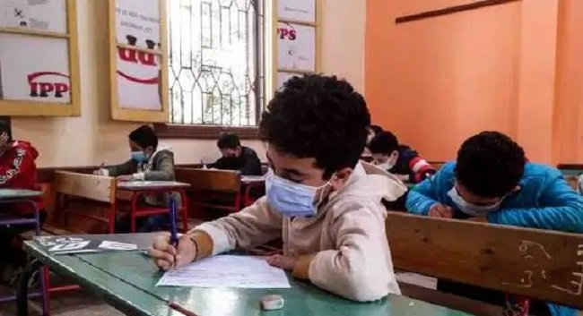

التعليم تكشف موعد اختبارات شهر مارس لطلاب النقل
تعقد المدارس امتحان شهر مارس لصفوف النقل بداية أبريل المقبل، حيث استعدت المدارس لإجراء اختبارات شهر مارس لصفوف النقل، وأكدت المديريات التعليمية أنه تم تجهيز الأسئلة وفق المواصفات الفنية فيما درسه الطالب خلال شهر مارس وبداية ابريل مع استبعاد الأجزاء المخصصة للإطلاع والتعلم الذاتى من أسئلة الامتحان.
تعقد المدارس امتحان شهر مارس لصفوف النقل بداية أبريل المقبل، حيث استعدت المدارس لإجراء اختبارات شهر مارس لصفوف النقل، وأكدت المديريات التعليمية أنه تم تجهيز الأسئلة وفق المواصفات الفنية فيما درسه الطالب خلال شهر مارس وبداية ابريل مع استبعاد الأجزاء المخصصة للإطلاع والتعلم الذاتى من أسئلة الامتحان.
وشددت المديريات التعليمية على أن حضور الطلاب الامتحان مهم ومن يتخلف عنه سوف يحرم من درجته، مشيرة إلى أن الامتحان يعقد أثناء الحصة.
وأشارت إلى أنه تعقد امتحانات الشهر لصفوف النقل فى أسئلة بسيطة اختيار من متعدد ومقالية حسب مواصفة الامتحان، ويتم تصحيح امتحانات الشهر لصفوف النقل من خلال المدارس والتوجيه الفنى بالإدارات التعليمية.د، ويحصل الطالب على الدرجة الأعلى بامتحانى شهرى فبراير ومارس وتضاف إلى درجة الطالب بامتحان نهاية الفصل الدراسي الثاني، و تعقد الامتحانات لقياس نواتج التعلم فيما درسه الطالب.
وأكد الدكتور رضا حجازى وزير التربية والتعليم والتعليم الفنى، على أهمية مواصلة العمل على جذب الطلاب للمدرسة، وخاصة طلاب الصفين الثالث الإعدادي والثالث الثانوى، وعودتهم إلى المدرسة بشكل كامل واسترجاع دورها التربوى، موجهًا بعقد محاضرات إضافية لهم في مختلف المواد الدراسية، بجانب تفعيل جميع الأنشطة لجذبهم.
وشدد الوزير على الالتزام بالكتاب الدوري الخاص بمتابعة الغياب اليومي للطلاب، والتأكيد على تفعيل التسجيل الإلكتروني للغياب أسبوعيًا لجميع المراحل التعليمية، فضًلا عن تفعيل الإجراءات العقابية للغياب؛ لتحقيق الانضباط في سير العملية التعليمية بمراحل التعليم المختلفة.
ووجه الوزير بالاهتمام بتطبيق الأنشطة الرياضية والفنية والثقافية، والاهتمام بالموهوبين، واكتشافهم ورعاية الفائقين منهم، ووجه باختيارهم عن طريق إعداد استمارة يشارك فيها ولى الأمر والمعلم والطالب؛ لحصر الطلاب الموهوبين.